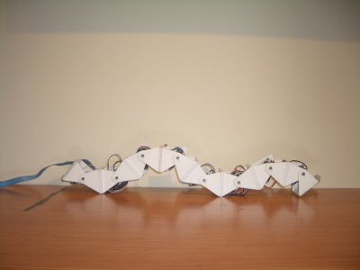

Ahora que estoy en la fase final de la tesis, he vuelto a poner en marcha a Cube Revolutions para rehacer algunos experimentos. Este robot lo terminé en el 2004, pero he seguido realizando investigaciones con él. En el 2005 creé las configuraciones mínimas y en el 2006 construí a Hypercube, con el que he estado estudiando la locomoción sobre un plano.
He aprovechado para subir a mi canal de Youtube los vídeos que ya tenía de Cube Revolutions, y he creado algunos nuevos:

Aquí se ve el Robot moviéndose con diferentes valores de amplitud, frecuencia y diferencia de fase de los generadores sinusoidales encargados de la locomoción.
Y hasta me he atrevido a hacer un vídeo hablando con mi cutre-inglés y explicando algunas cosillas 😛

Qué bien que lo hayas puesto en marcha de nuevo, a ver si haces cosillas nuevas con el, que es uno de los mejores robots “caseros” que hay!
Gracias Mif! 😉